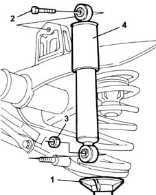

4420A30 l/h or r/h rear suspension damper (one) - r+r
- Path
- Procedures > 44 SUSPENSION AND WHEELS > 4420 REAR SUSPENSION > 4420A rear dampers and springs > 4420A30 l/h or r/h rear suspension damper (one) - r+r
- Kind
- repair procedure (removal / refitting; the operation number is the code)
- Applies to
- all engines; all production periods
- Interactive page
- https://sloeber94.github.io/elrnDB-fMltpl/en/#/2891718
Applies to: all engines; all production periods
 Removing
Removing
 Refitting
RefittingPosition the vehicle on a lift and raise it.
1. Partly compress the suspension using a hydraulic jack.
2. Undo the upper bolt fixing the shock absorber to the rear axle.
3. Undo the lower nut fixing the shock absorber to the track control arm.
4. Remove the rear shock absorber.

Applies to: all engines; all production periods
Refitting
RemovingIf the mileage for the shock absorbers is more than 20,000 - 25,000 Km, always replace both shock absorbers for each axle together, taking care to fit the same type of shock absorbers from those available as spares on the same axle.
If the mileage for the shock absorbers is below 20,000 - 25,000 Km, then one shock absorber only can be replaced, as long as the new one is the same type and after having checked that the other shock absorber is in perfect working order.
Fit the rear shock absorber.
Tighten the upper bolt fixing the shock absorber to the rear axle to torque.
 | Fastening | Component | Ø | Value (daNm) |
|---|---|---|---|---|
- | Bolt | REAR DAMPER ATTACHMENT | M10 x 1.25 | 7 |
Tighten the lower nut fixing the shock absorber to the track control arm to torque.
| Fastening | Component | Ø | Value (daNm) |
|---|---|---|---|---|
- | Nut | REAR DAMPER ATTACHMENT | M12 x 1.25 | 8.8 |
Remove the hydraulic jack.
Lower the car and remove it from the ramp.